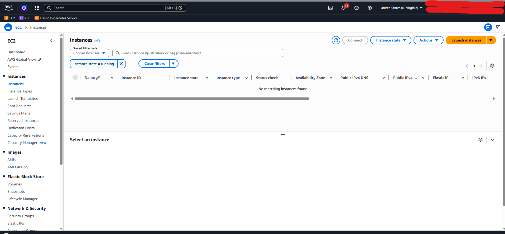

Amazon EC2:
O Coração da Nuvem
Difusão de Conhecimento em Cloud Services • Semana 1
Fundamentos Teóricos
Compreendendo a base de computação elástica da AWS
O que é o Amazon EC2?
Elasticidade
Capacidade computacional redimensionável. Ajuste sua infraestrutura à demanda instantaneamente.
Controle Total
Você tem acesso root administrativo à instância virtual. Instale pacotes e configure do seu jeito.
Custo Eficiente
Modelo de pagamento por uso. Sem necessidade de comprar hardware antecipadamente.
Modelos de Compra e Economia
| Modelo | Uso Ideal | Impacto Financeiro |
|---|---|---|
| On-Demand | Workloads imprevisíveis e de curto prazo. Desenvolvimento inicial. | Preço cheio. Cobrança por segundo de uso. |
| Spot Instances | Processamento batch, tarefas tolerantes a falhas e flexíveis. | Até 90% de desconto sobre o valor sob demanda. |
| Savings Plans | Comprometimento de uso computacional constante (1 ou 3 anos). | Até 72% de desconto para uso estável. |
| Reserved Instances | Capacidade garantida para aplicações em estado estacionário. | Desconto significativo semelhante ao Savings Plan. |
Componentes Principais do EC2
AMIs & Instâncias
A AMI (Amazon Machine Image) é o modelo pronto (SO, drivers, pacotes). O tipo da instância (ex: t3.micro) define os recursos físicos virtuais (VCPUs e RAM).
Segurança & Acesso
Security Groups atuam como firewalls virtuais stateless. Os Key Pairs garantem o acesso criptografado seguro via conexões SSH/RDP.
Laboratório Prático
Colocando em prática: Lançando e acessando seu primeiro servidor Web
Objetivos do Laboratório
- Provisionar uma instância Linux (Amazon Linux 2023).
- Configurar Security Groups para tráfego público.
- Conectar sem chaves via EC2 Instance Connect.
- Instalar um servidor web HTTP Apache e validar o acesso.

Guia de Implementação Rápida
- No Console AWS, navegue até EC2 Dashboard e clique em "Launch Instance".
- Nomeie a máquina como
Meu-Servidor-Web. - Escolha a imagem Amazon Linux 2023 (AMI).
- Mantenha o tipo t2.micro / t3.micro (Elegível para a camada gratuita).
- Em Configurações de Rede, marque "Allow HTTP traffic from the internet".
- Clique em "Launch Instance" e aguarde o status mudar para "Running".
Configuração do Serviço HTTP
- Passo 1:
sudo dnf update -y - Passo 2:
sudo dnf install httpd -y - Passo 3:
sudo systemctl start httpd - Passo 4:
sudo systemctl enable httpd - Passo 5: Configure permissões
chown -R ec2-user:apache /var/www - Passo 6: Libere as portas 80 e 443 no Security Group.

Publicando o index.html
Instruções de Deploy:
- Navegue até o diretório:
cd /var/www/html - Crie o arquivo:
sudo nano index.html - Cole o conteúdo do código anexo.
- Pressione CTRL + O (Salvar) e CTRL + X (Sair).
- Acesse o IP Público no seu navegador.
AWS Architect Simulation
Simulado com questões interativas reais do exame SAA-C03
Questão 1: Computação Otimizada e Custo
Explicação Arquitetural
Questão 2: Armazenamento e Alta Performance
Explicação Arquitetural
Questão 3: Alta Disponibilidade e Resiliência
Explicação Arquitetural
Questão 4: Rede e Segurança por Privilégio Mínimo
Explicação Arquitetural
Dúvidas?
Semana 1 concluída com sucesso!
Próxima Apresentação: Armazenamento Inteligente com Amazon S3
Revise as ferramentas, console e laboratórios práticos disponíveis em nosso portal local.